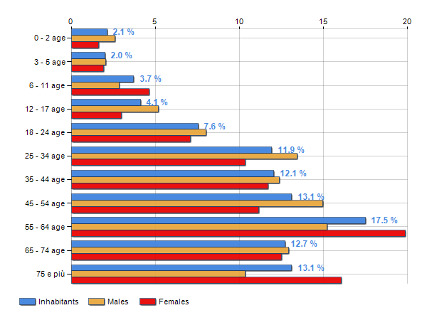
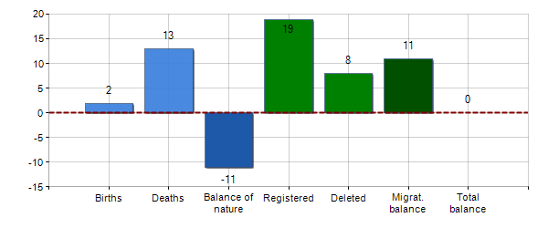
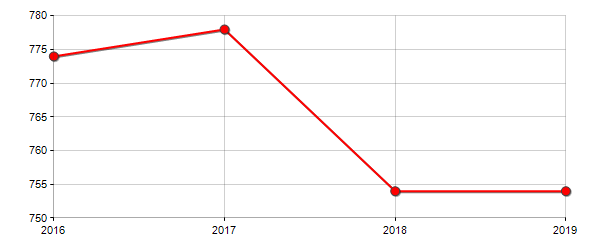
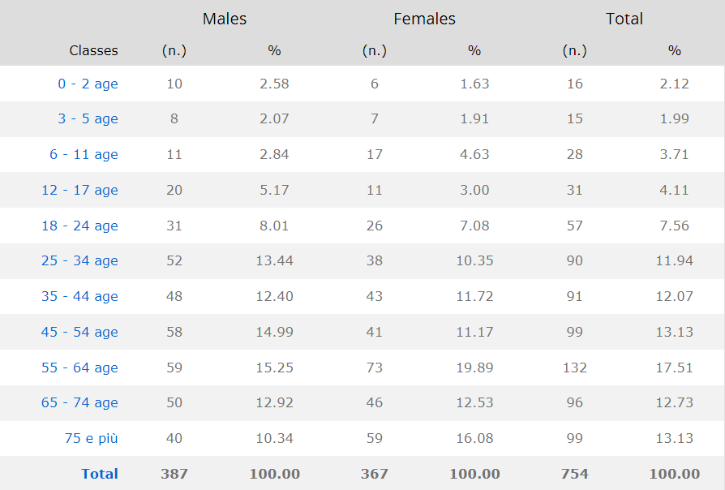

Statistics
Resident population and its related trend, balance of nature and migratory balance, birth rate, death rate, growth rate and migration rate in Municipality of Mount Saratoga.
Population 2021
51.3% of the population is Male.
48.7% of the population is Female.
17.5% of the population are foreigners.
Territorial extension of Municipality of MOUNT SARATOGA and
related population density, population per gender and number
of households, average age and incidence of foreigners.
Age Classes
 Average age of males 46.07 years old.
Average age of females is 49.98 years old.
Demographic Balance
Inhabitants on 1th Jan. 2020 - 754
Births- 2
Deaths- 13
Registered- 19
Deleted- 8
Migration- +11
Inhabitants on 31th Dec. 2021 - 754
Inhabitants Trend

2021 Year Inhabitants on Previous Year
2018- 774 Inhabitants
2019- 778 +0.52%
2020- 754 -3.08%
2021- 754 +0.00%
Average annual variation (2016/2019): -0.87
Average annual variation (2018/2019): +0.00
Population By Age
Age classes per gender and related impact, average age and old-age index in Municipality of MOUNT SARATOGA.
Synthesis Data
Total number of foreigners living in MOUNT SARATOGA is 132
people = 100% of the foreign population.
There are 74 male foreigners = 55.06% of the foreign population,
and 9.81% of the total population in Mount Saratoga.
There are 58 female foreigners = 43.94% of the foreign population,
and 7.69% of the total population in Mount Saratoga.
Photo Gallery
Church
The historic Lakeside church build in 1812.
Inn
The Lakeside church steeple and the Saratoga Inn.
Homes
Homes of the Mount Saratoga community climb the mountainside overlooking the lake.
Shops
Local shops line the cobblestone streets of the village.
Village
The fountain of truth, located in the village center square of Mount Saratoga.
Local Storage
Number of Visits to Page:
Days since last visit: